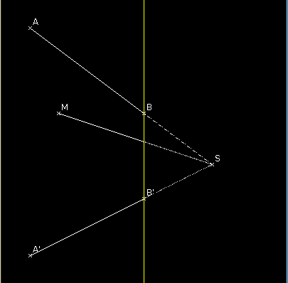

| Choisissez votre langue ! | Choose your language ! |
On donne sur une feuille de papier deux droites (AB) et (A'B') se coupant en dehors de la feuille en un point S.
On se donne également un point M n'appartenant à aucune des deux droites.
Construire la droite passant par M et qui rejoint S.

aide
Construire l'image de M par une homothétie quelconque de centre S.
solution
Tracer une droite passant par M et coupant (AB) en X et (A'B') en X'.
Tracer une droite strictement parallèle à la première et coupant (AB) en Y et (A'B') en Y'.Tracer une droite strictement parallèle aux deux précédéntes et coupant (AB) en Z et (A'B') en Z'.
Soit U le point d'intersection de (XY') avec (YX').
Soit V le point d'intersection de (YZ') avec (ZY').
La droite (MU) coupe (YY') en T et la droite (VT) coupe (ZZ') en Q.
Nous affirmons que (MQ) est la droite cherchée.
Soit en effet k le rapport \( \displaystyle frac{\overline{SZ}}{\overline{SX}} \) où S est le point d'intersection de (AB) avec (A'B').
Il suffit de montrer que Q est l'image de M par l'homothétie h de centre S et de rapport k.
Or h(M) se trouve sur une parallèle à (XX') passant par Z, donc sur (ZZ').
Il suffit donc de voir que Q divise le segment [ZZ'] dans le même rapport que M divise le segment [XX'] soit m.
Mais en utilisant des homothéties de centres U et V respectivement on voit que T divise le segment [YY'] dans le rapport 1/m, et Q divise [Z,Z'] dans le rapport 1/(1/m)=m.
We give on a sheet of paper two straight lines (AB) and (A'B') intersecting outside the sheet at a point S.
We also give ourselves a point M that does not belong to either of the two lines.
Construct the line going through M and joining S.
hint
Build the image of M by any dilation with center S.
solution
Draw a straight line passing through M and intersecting (AB) at X and (A'B') at X'.
Draw a straight line strictly parallel to the first line and intersecting (AB) at Y and (A'B') at Y'.Draw a line strictly parallel to the two preceding ones and intersecting (AB) in Z and (A'B') in Z'.
Let U be the intersection point of (XY') with (YX').
Let V be the intersection point of (YZ') with (ZY').
The line (MU) intersects (YY') in T and the line (VT) intersects (ZZ') in Q.
We assert that (MQ) is the sought line.
Let k be the ratio \( \displaystyle frac{\overline{SZ}}{\overline{SX}} \) where S is the intersection point of (AB) with (A'B').
It suffices to show that Q is the image of M by the dilation h with center S and ratio k.
Now h(M) is on a parallel to (XX') going through Z, therefore on (ZZ').
It is therefore sufficient to see that Q divides the segment [ZZ'] in the same ratio as M divides the segment [XX'], i.e. m.
But using dilation of centers U and V respectively we see that T divides the segment [YY'] in the ratio 1/m, and Q divides [Z,Z'] in the ratio 1/(1/m)=m .
|
Création Gilles Dubois - licence CC-BY-SA
Created by Gilles Dubois - licence CC-BY-SA
|
Septembre 2023
September 2023
|
Version mobile Jquery
Mobile Jquery version
|
|